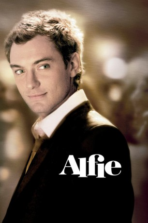

#10628 Alfie
Auszeichnungen: 1 GoldenGlobes gewonnen
 
 IMDB-Wertung: 6.2 / 10
IMDB-Wertung: 6.2 / 10  Tomatometer: 48
Tomatometer: 48  Metascore: 49
Metascore: 49 
In den jungen Händen des charmanten Alfie schmelzen New Yorks Frauen wie zarte Schneeflocken. Doch obwohl er Gefühle außer Acht lassen will, setzen ihn seine Liebschaften unter psychischen Stress.
Jahr: 2004
Dauer: 101 Minuten
FSK: 12
Land: England Studio: UIPTonspuren:
Untertitel:
Auflösung: SD (704x384) Größe: 1198 MB
Genre: Drama, Komödie, Liebe
Regisseur: Charles Shyer
Drehbuch: Bill Naughton, Bill Naughton, Elaine Pope, Charles Shyer
Soundtrack: Mick Jagger, John Powell, David A. Stewart
Darsteller:
 Jude Law als Alfie
Jude Law als Alfie Renée Taylor als Lu Schnitman
Renée Taylor als Lu Schnitman Jane Krakowski als Dorie
Jane Krakowski als Dorie- Jeff Harding als Phil
 Marisa Tomei als Julie
Marisa Tomei als Julie- Kevin Rahm als Terry
- Max Morris als Max
 Omar Epps als Marlon
Omar Epps als Marlon Nia Long als Lonette
Nia Long als Lonette Gedde Watanabe als Wing
Gedde Watanabe als Wing- Jo Yang als Mrs. Wing
 Tara Summers als Carol
Tara Summers als Carol- Sam Vincenti als Felix
- Katherine LaNasa als Uta
- Claudette Mink als Bitter Girl
- Anouska De Georgiou als Tonya
- Anastasia Griffith als Chyna
 Jefferson Mays als Dr. Miranda Kulp
Jefferson Mays als Dr. Miranda Kulp Sondra James als Mrs. Liberman
Sondra James als Mrs. Liberman- Dick Latessa als Joe
 Susan Sarandon als Liz
Susan Sarandon als Liz Graydon Carter als Wes
Graydon Carter als Wes Steve Morphew als Waldorf Doorman
Steve Morphew als Waldorf Doorman Sienna Miller als Nikki
Sienna Miller als Nikki- Finlay Robertson als Bright Young Thing
 Edward Hogg als Bright Young Thing
Edward Hogg als Bright Young Thing- Charlotte Moore als New Year's Eve Singer
 Cosima Shaw als New Year's Eve Stunner
Cosima Shaw als New Year's Eve Stunner- Marjan Neshat als Traffic Cop
 Saidah Arrika Ekulona als Gilda - the Receptionist
Saidah Arrika Ekulona als Gilda - the Receptionist- Stephen Gaghan als Adam
 Paul Brooke als Flower Shop Proprietor
Paul Brooke als Flower Shop Proprietor- Lucy-Anne Brooks als Club Dancer (uncredited)
- Amber Cather als Girl (uncredited)
- Dominick Cicco als Hotel Guest (uncredited)
- Angela Frye als Madison Avenue Shopper (uncredited)
- Cynthia Granville als Hooker (uncredited)
- Doug Walker als Cafe Bartender (uncredited)
- Gunna Wilson als Flight Attendant (uncredited)
- Deborah Lynn-Shyer als Pretty Teacher
- Veronica Clifford als Waiting Room Nurse
- Martha Cope als Bright Young Thing
- Ben Jackson als Bright Young Thing
- Gilbert S. Williams als Elvis - the Doorman
- Zena Ahmed als Party Goer (uncredited)
- Terry Edwards als Himself (uncredited)
- Allan Gentleman als Madison Avenue Shopper (uncredited)
- Steve Hamm als Janitor (uncredited)
- Daniel Solazzo als Pallbearer (uncredited)
- Liam Young als Funeral Boy (uncredited)
Datei: X:\2004(A-F)\Alfie (2004, FSK12, 704x384).avi seit 04.02.2019
Festplatte: HD 2003-2004-2005(A-F)
 Es gibt insgesamt 39 Filme in der Gruppe '2004(A-F)'
Es gibt insgesamt 39 Filme in der Gruppe '2004(A-F)'